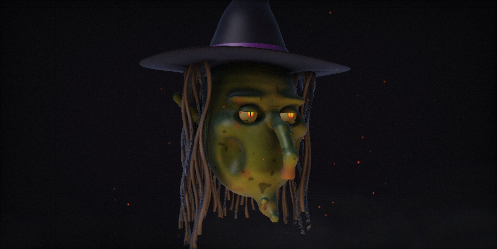

Kostucha The Reaper
An aged, cracked skull in a black hood, with fire burning in its eye sockets. Patient. Polite. Always counting.
“Come closer, child. I only need your name… for the list.”
Free · Open source · Runs on your computer
I've been waiting for you…
An AI face that watches trick-or-treaters, answers them in character and scares on cue. Turn any old monitor into a living monster.
Windows · macOS · Linux · MIT licence · the demo needs a decent GPU
Hauntface is a desktop app — open this page on a computer to download it.
Hauntface is a free desktop app. It renders a real-time 3D monster face, listens to whoever walks up, answers them in character and looks straight at them. All you need is an old monitor, a webcam and a speaker hidden in your prop.
Two faces. Two tempers.
An aged, cracked skull in a black hood, with fire burning in its eye sockets. Patient. Polite. Always counting.
“Come closer, child. I only need your name… for the list.”

Green warty skin, a long hooked nose and slit cat eyes that blink a little too slowly. Pointy hat, grey hair. Chatty. Always hungry.
“Answer my riddle, sweetling, and you get candy. Answer wrong… and you stay for dinner.”
The ritual, in three steps
Install Hauntface on Windows, Mac or Linux. The Reaper or the Witch — your choice.
An old monitor or TV, a webcam, a mic and a speaker — tucked under a hood, in a window or behind glass.
Paste a Claude key or a free NVIDIA key. Then turn off the porch light and wait.
What it can do
Webcam motion tracking: the head turns toward people, wakes up when someone approaches and dozes off when it's quiet. Frames (64×48) are processed locally — never stored, never sent.
Microphone plus Whisper speech-to-text. Talk to it normally — it understands.
It thinks with an LLM — Claude, or free and fast NVIDIA-hosted models on your own key. It never breaks character.
A processed demonic or witchy voice, with the jaw moving in sync with every word.
The head moves like it's on servos — servo whine included. It breathes, blinks and nods while it speaks.
Riddles for trick-or-treaters (right answer → candy) and a counter of “souls collected tonight”.
Type a line and the monster says it. Every scare has its own hotkey.
Speaks Polish and English. Free and open source, for Mac (Apple Silicon), Windows and Linux.
One key. One scream.
Every sound is synthesized live — no audio files. Press the key at exactly the wrong moment.
Lunges at the viewer and the screen “shatters”.
The head turns all the way round, bones cracking.
Real 3D lighting, then thunder.
The face glitches. Something else takes over.
Blood slowly runs from the eyes.
A sudden, nervous jerk.
They crawl out of the eye sockets.
They drift through the fog.
Howling, somewhere out there.
The glass cracks from the inside.
Tolls the real hour. At midnight: the witching hour.
Click. Clack. Click.
Something quiet, right by your ear.
The laugh you'll hear in bed later.
The light in the eyes goes out… and comes back.
Coming
Things still hatching. Not in the app yet — but already scratching at the lid.
Real LED eyes, a jaw servo and a fog machine, driven by the app.
Puppeteer the monster and fire scares from your phone, hidden behind a bush.
Ollama + whisper.cpp + Piper — no key, no internet.
Something else is waiting its turn in the dark.
Free. Forever. MIT licensed.
Choose your tombstone.
R.I.P.
Intel Mac? Run from source.
R.I.P.
R.I.P.
Hauntface builds aren't code-signed yet (certificates cost money; the project is free), so your OS will warn you. The code is open — you can read every line on GitHub.
When “Windows protected your PC” appears, click More info → Run anyway.
Drag Hauntface into Applications and try to open it. If macOS blocks it, go to System Settings → Privacy & Security and click Open Anyway. If it says the app is “damaged”, run this in Terminal:
xattr -dr com.apple.quarantine /Applications/Hauntface.appThe AppImage has to be marked executable:
chmod +x Hauntface-linux-x86_64.AppImage
./Hauntface-linux-x86_64.AppImageOr install the .deb:
sudo apt install ./Hauntface-linux-amd64.debFAQ
No. Webcam frames are analysed locally at a tiny 64×48 and thrown away immediately — just enough to know where someone is standing. In cloud mode, the speech and conversation text go to the AI provider you chose (Anthropic or NVIDIA). Hauntface itself stores nothing.
The app is free. The AI runs on your own key: Claude is pay-per-use — cents for a whole evening. NVIDIA offers free trial access with rate limits. An offline mode is coming.
For now, yes — for Claude or for NVIDIA. You paste it into the app's settings. Once offline mode lands, you won't need one.
Any computer from the last ~5 years with a GPU that can do WebGL2, plus a screen, webcam, mic and speakers. On first launch the 3D shaders compile, which can take 10–20 seconds on weak integrated GPUs.
There's a family mode and a strict prompt that keeps the monster in line. But it is still AI — keep an adult nearby.
Because the builds aren't code-signed yet. How to get past the warning is right next to the downloads.
Not yet.